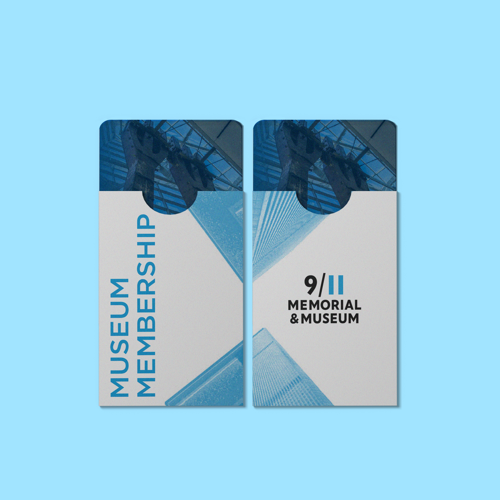
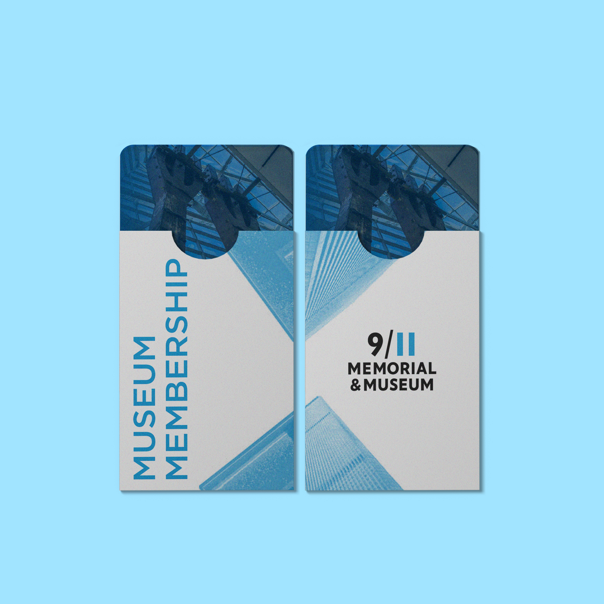

Each year, the museum accomplishes a wide range of meaningful initiatives. This end-of-year report was designed to capture and communicate those efforts—demonstrating to the board and the public how we remain committed to our mission.
As the designer on this project, I helped bring this 60+ page report to life. It was a substantial undertaking, and I’m proud to have contributed to such a vital piece of institutional storytelling. The project offered a powerful reminder of the museum’s impact on the community—and the importance of design in conveying that story clearly and compellingly.
This was also an opportunity to sharpen my typesetting and layout skills. I focused on building a strong grid, establishing visual hierarchy, and ensuring consistency across pages. My design approach aimed to reflect the museum’s identity while bringing a fresh, modern sensibility to the piece—professional in tone, yet accessible and engaging to read.


As a member of the museum’s marketing team, we identified a gap in visitor awareness: many people don’t realize that there is a museum in addition to the 9/11 Memorial pools. To help bridge that gap, we created signage for the plaza to inform visitors about the museum and what they can expect during their visit.
My goal for this signage was to offer a compelling glimpse into what the museum holds. While the memorial plaza is powerful on its own, it doesn’t reveal the depth of artifacts and educational experiences housed within the museum. The featured image on the sign is of the Last Column—the final piece of the Twin Towers removed during the recovery effort. This piece was designed to spark curiosity, communicate the museum’s emotional and historical depth, and invite more people to engage with the full experience inside.


The membership team requested a refresh of their materials this year, which presented an exciting opportunity to work creatively with both content-heavy layouts and open space. I designed new brochures, folders, and key card holders as part of this update.
My goal was to bring a fresh perspective to the museum’s brand while incorporating impactful imagery. One of the key challenges was a constraint from the printer: we were limited to just two ink colors (excluding the white of the paper). Rather than seeing this as a limitation, I embraced it as a creative challenge. It pushed me to think more strategically and ultimately led to a more cohesive design.
To work within the color limitation while still including photography, I used bitmap treatments. This allowed me to preserve image detail while staying within the two-color requirement. The bitmap effect also gave me more flexibility with layout and texture, helping to integrate text and visuals in a compelling way. For the imagery, I intentionally paired photographs of the Twin Towers with those of the Memorial pools to visually connect the past and present. This approach ties back to the museum’s mission: to remember and honor the nearly 3,000 victims of the attacks, and all those who risked their lives to save others.

 


"Love is Stronger than Hate" is a recently acquired trademark by the museum, and I was given the opportunity to redesign it to better align with the institution’s brand identity.
I developed four distinct design directions, each exploring a different visual approach. Across all versions, the central goal was to emphasize the message of love.

The process began with over 100 initial sketches. I was particularly drawn to using the letterforms themselves to create the shape of a heart. This approach felt like a natural expression of inclusivity—a key theme I wanted to convey. I focused on hand-drawn, rounded letterforms and incorporated a range of brand colors to reflect the museum’s values.
Each year, the museum accomplishes a wide range of meaningful initiatives. This end-of-year report was designed to capture and communicate those efforts—demonstrating to the board and the public how we remain committed to our mission.
As the designer on this project, I helped bring this 60+ page report to life. It was a substantial undertaking, and I’m proud to have contributed to such a vital piece of institutional storytelling. The project offered a powerful reminder of the museum’s impact on the community—and the importance of design in conveying that story clearly and compellingly.
This was also an opportunity to sharpen my typesetting and layout skills. I focused on building a strong grid, establishing visual hierarchy, and ensuring consistency across pages. My design approach aimed to reflect the museum’s identity while bringing a fresh, modern sensibility to the piece—professional in tone, yet accessible and engaging to read.
As a member of the museum’s marketing team, we identified a gap in visitor awareness: many people don’t realize that there is a museum in addition to the 9/11 Memorial pools. To help bridge that gap, we created signage for the plaza to inform visitors about the museum and what they can expect during their visit.
My goal for this signage was to offer a compelling glimpse into what the museum holds. While the memorial plaza is powerful on its own, it doesn’t reveal the depth of artifacts and educational experiences housed within the museum. The featured image on the sign is of the Last Column—the final piece of the Twin Towers removed during the recovery effort. This piece was designed to spark curiosity, communicate the museum’s emotional and historical depth, and invite more people to engage with the full experience inside.
The membership team requested a refresh of their materials this year, which presented an exciting opportunity to work creatively with both content-heavy layouts and open space. I designed new brochures, folders, and key card holders as part of this update.
My goal was to bring a fresh perspective to the museum’s brand while incorporating impactful imagery. One of the key challenges was a constraint from the printer: we were limited to just two ink colors (excluding the white of the paper). Rather than seeing this as a limitation, I embraced it as a creative challenge. It pushed me to think more strategically and ultimately led to a more cohesive design.
To work within the color limitation while still including photography, I used bitmap treatments. This allowed me to preserve image detail while staying within the two-color requirement. The bitmap effect also gave me more flexibility with layout and texture, helping to integrate text and visuals in a compelling way. For the imagery, I intentionally paired photographs of the Twin Towers with those of the Memorial pools to visually connect the past and present. This approach ties back to the museum’s mission: to remember and honor the nearly 3,000 victims of the attacks, and all those who risked their lives to save others.